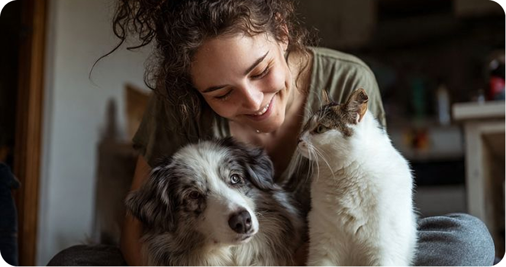
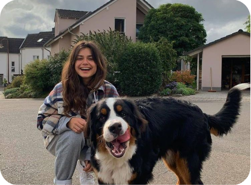

Наш комплексный груминг включает в себя все, что нужно вашему питомцу, чтобы он выглядел, чувствовал себя и пах наилучшим образом. Будь то первый день в спа-салоне для вашего щенка или плановый визит, наши опытные грумеры обеспечат бережный уход в спокойной и чистой обстановке. Мы подбираем каждую процедуру индивидуально, с учетом породы, типа шерсти и характера вашего питомца.
С приходом весны наступает сезон обновления. Длинные дни, свежий воздух и больше времени на свежем воздухе – это долгожданная перемена после холодных зимних месяцев. Весна предоставляет вашей собаке больше возможностей размять лапы, исследовать мир и насладиться новыми приключениями. Но с изменением сезонов меняются и ее потребности в благополучии.

Чем больше движения, тем больше нагрузка на суставы вашей собаки. Обратитесь к ветеринару за помощью в составлении плана по поддержанию здоровья суставов. В зависимости от возраста собаки могут быть полезны такие меры, как контроль веса, регулярные физические упражнения и вспомогательные средства передвижения, такие как пандусы или ковры на скользких полах.
«Собакам всех возрастов необходимы крепкие и здоровые суставы для комфортного передвижения. Регулярные физические упражнения, контроль веса и добавки для здоровья суставов могут обеспечить поддержку на протяжении всей их жизни».
Для большинства домашних животных рекомендуется ежегодный осмотр для контроля общего состояния здоровья, обновления прививок и выявления ранних признаков заболеваний. Пожилым животным или животным с хроническими заболеваниями может потребоваться более частый осмотр.
Вы можете позвонить нам по телефону, указанному на сайте, или оставить заявку через форму обратной связи, и мы свяжемся с вами в ближайшее время.
Частота купания зависит от породы, типа шерсти и образа жизни питомца. В среднем собак купают раз в 1-3 месяца.
Немедленно свяжитесь с ветеринарной компанией. Не пытайтесь вызывать рвоту самостоятельно, пока не проконсультируетесь с врачом.
Да, животные могут испытывать стресс из-за громких звуков, одиночества или смены обстановки. В таких случаях может помочь консультация зоопсихолога.

Легко находите и бронируйте услуги проверенных специалистов по уходу за животными рядом с вами.
Выберите нас, если вам нужен первоклассный уход за питомцами! Наша команда опытных грумеров привносит профессионализм и стремление к совершенству в каждый сеанс ухода за вашим питомцем.
Свяжитесь с нашими дружелюбными специалистами, чтобы обсудить потребности вашего питомца в уходе. Мы ставим комфорт и стиль вашего питомца на первое место!
Оцените высочайший уровень ухода за домашними животными. Наше современное оборудование обеспечивает безопасную и приятную среду для ваших пушистых друзей.
Прочитайте трогательные истории тех, кто дал второй шанс нуждающимся животным.


«Хотя сами грумеры — опытные специалисты, многие кошки любят, когда их расчесывают...»
«Хотя сами грумеры — опытные специалисты, многие кошки любят, когда их расчесывают...»
«Хотя сами грумеры — опытные специалисты, многие кошки любят, когда их расчесывают...»
«Хотя сами грумеры — опытные специалисты, многие кошки любят, когда их расчесывают...»
«Хотя сами грумеры — опытные специалисты, многие кошки любят, когда их расчесывают...»
«Хотя сами грумеры — опытные специалисты, многие кошки любят, когда их расчесывают...»